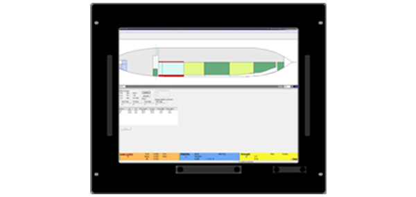

- A graphical view of Equilibrium Damaged Condition of vessel
- Each compartment is modeled accurately using Lines Plan / Structural drawings to generated Hydrostatics & KN curves and use the same for computations at various trims
- Damage Stability Report showing status of the vessel before & after damage

- Flexibility to choose various combinations of compartments, along with pre-loaded Damage cases
- All the required significant criteria like – MARPOL, MODU, IGC, SOLAS, IBC incorporated
- Flexibility to change the default PERMEABILITY of the compartments
- Outflow calculation with Grounding
- Online sounding module to be integrated with tank gauging system to gauge the tank levels in real time which updates the Loading Program automatically.
- Height of water in the tanks (from Tank Gauging System) will be taken in program and lling ratios of the tanks / intact stability results can be seen on screen.
- Interface Required:
Protocol : MODBUS Transmission Mode : RTU/ASCII Transmission Cable : RS-485 PLC Addresses of Tanks